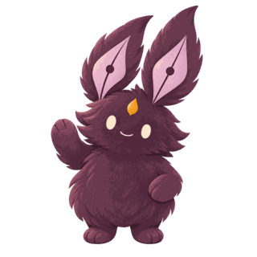

Ваши истории, в одном окне
Установите Таверну в один клик, запустите уже установленную или подключитесь по адресу.

Тавернка рядом
Нажми — подскажу
Тавернка рядом
Нажми — подскажу
На этом компьютере
Если SillyTavern ещё нет — нажмите «Установить SillyTavern», и приложение само скачает её, поставит зависимости и плагин Корректора. Если она уже есть — выберите её папку.
Папка ещё не выбрана
При закрытии приложения запущенная им Таверна тоже остановится.
Обновления и автозапуск
Приложение Тавернка
Проверка…
Корректор в SillyTavern
Проверка…
SillyTavern
Обновить сервер с сохранением чатов
По адресу и с телефона
Для сервера на другом компьютере или уже запущенной Таверны.
Подключение с телефона (Android и iPhone)
Когда Таверна запущена и доступ включён, впишите адрес этого ПК в приложении на телефоне.
Сайты провайдеров ИИ
Страницы ключей и баланса провайдеров прямо внутри окна Тавернки.